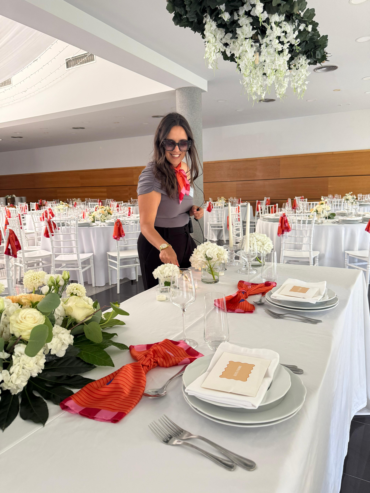
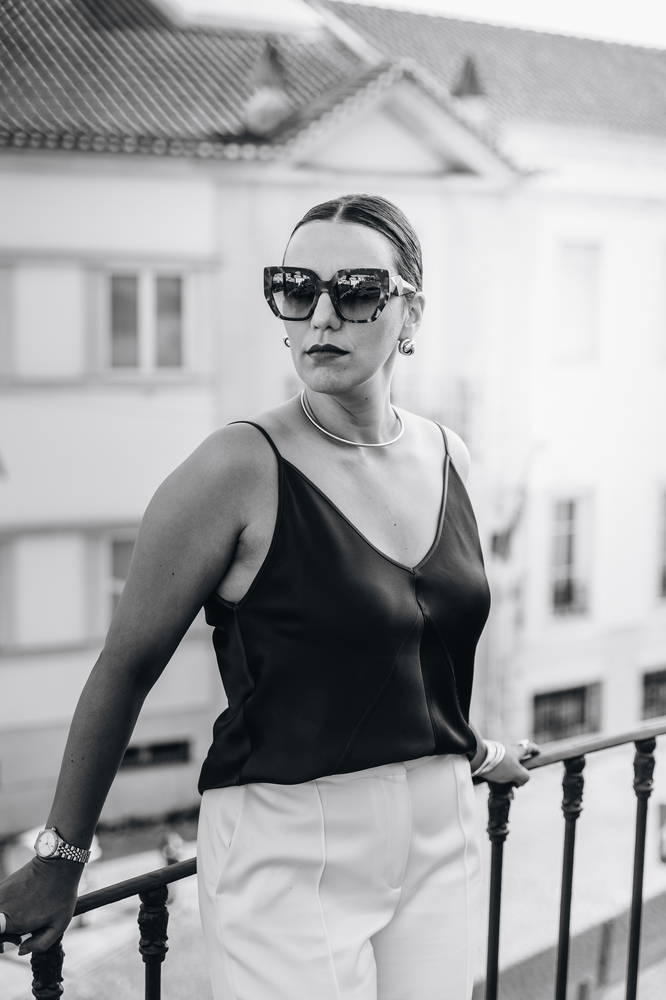

No dia 15 de julho, vou mostrar-te o caminho para transformares o teu gosto por organizar e decorar eventos num negócio que te permite viver de eventos — fazendo o que gostas, sendo bem paga e tendo liberdade de tempo para quem é importante para ti, mesmo que estejas a começar do zero.
É no grupo que vou enviar o link de acesso, os lembretes e conteúdos importantes para chegares à aula preparada.

O grupo será usado apenas para comunicações importantes sobre a aula.

Mentora de negócios de eventos e especialista em ajudar mulheres a transformarem a paixão por organizar e decorar eventos num negócio com mais clareza, estrutura e sustentabilidade.
Empreendedora há mais de 13 anos, criou 3 negócios do zero, incluindo a CheiraFesta, o seu próprio negócio de eventos. Foi nesse negócio que saiu de eventos de 300 € para eventos de 50.000 €, unindo a sua experiência em marketing, negócio e eventos.
É fundadora da Event Business School™ e criadora do CODE, a primeira certificação em Portugal que une técnica e negócio para quem quer tornar-se profissional de organização e decoração de eventos. Já certificou mais de 300 profissionais.
Deixares de apenas fazer eventos para começares a viver deles.
É no grupo que vou enviar o link de acesso, os lembretes e conteúdos importantes para chegares à aula preparada.